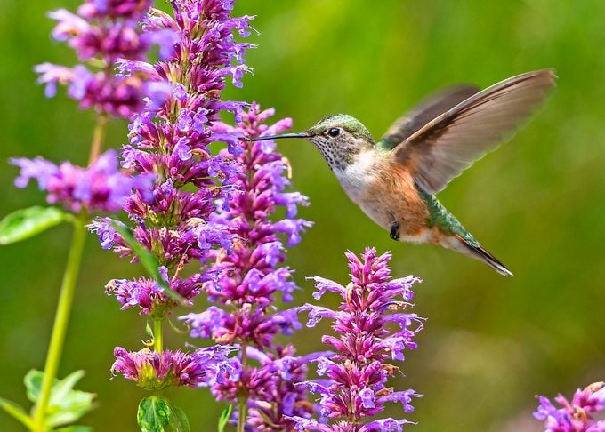

If you want to attract these majestic fliers, you need to know what foods hummingbirds eat.
Hummingbirds consume a variety of foods in their diet. They drink nectar from flowers and sugar water for energy.
Roger Emerick of South Glastonbury, Connecticut, asks, “Should I add anything to the sugar water for my hummingbirds to make it more nutritious?”
When you’re feeding them at your hummingbird feeder, there’s no need to put in additives such as red dye or honey. Offer hummingbirds the perfect meal by making this sugar water recipe.
Rufous hummingbird feeds on flower nectar
Because they constantly burn energy while on the move, hummingbirds may eat up to three times their body weight in a day. To find that much nectar, one bird might visit hundreds of flowers per day. This is why a hummingbird-friendly backyard is so important.
Anusha Shankar, a postdoctoral fellow conducting research at the Cornell Lab of Ornithology, explains why these birds are always eating. She says, “Hummingbirds need to eat constantly because they use up energy very quickly. If we had their metabolic rate, we’d need to eat 300 hamburgers a day to survive!”
According to lab studies, the amount of sugar water consumed by a hummingbird will vary depending on the richness of the sugar concentration. With the typical 4:1 ratio of water to sugar, a ruby-throat probably won’t drink more than about 2 fluid ounces per day.
A gallon of sugar water could feed about 60 hummingbirds in a day! The actual number of individuals could be even higher if some are just stopping briefly, or it could be lower if some of the sugar water is being lost to evaporation, dripping, insects, etc. It’s tricky to come up with solid numbers, but it’s still fun to ponder how many hummers might be out there.